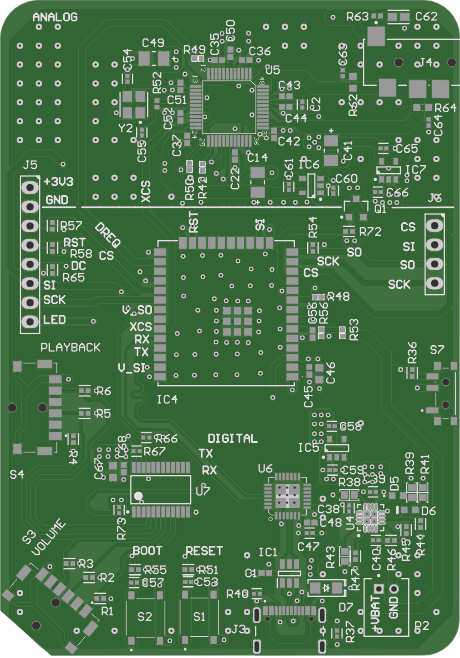

The project
The player is a personal project: a fully offline music player on a 4-layer board I designed in Altium. An ESP32 reads songs from an SD card and streams them to a VS1053B audio decoder, and a small ST7735 screen shows what’s playing. It runs from a 1000 mAh LiPo and lives in a snap-fit case I printed. Once it worked I used it every day, and it got about 17 hours per charge.
The symptom
Every so often the player would reset and boot back up in the middle of a song. A random reset like that often points to the power supply, so before changing anything I wanted actual numbers.
How the power is laid out
It helps to know where the 3.3 V comes from. A single LDO regulator (an AP2112K) makes the main 3.3 V rail for the ESP32, the screen and the SD card. A P-channel MOSFET, switched by the ESP32, passes that rail on to the decoder side so the audio parts can be shut off in sleep. From there, a 1.8 V LDO powers the decoder’s core and a second 3.3 V LDO powers its analog side.
The test
I wrote a Python script that drives an Analog Discovery 2 as an oscilloscope and measures the noise on the 3.3 V rail. I ran it across five situations, from doing nothing up to the busiest thing I could do with the player. My target was under 200 mV of ripple in every case.
| What the player was doing | Result |
|---|---|
| Idle, no music | Under 200 mV |
| Playing, screen off | Under 200 mV |
| Playing, screen on | Under 200 mV |
| Playing, scrolling through songs | Under 200 mV |
| Playing and skipping songs | About 300 mV; rail down to about 3.05 V |
Only the last case failed. While skipping songs, the noise climbed to about 300 mV and the rail sagged to around 3.05 V. The biggest dip I saw under heavy load was roughly 350 mV below where it should sit, which lined up with the kind of resets I’d been getting.
Why skipping songs, specifically
This is my understanding of it. Skipping a song makes several things happen at once: the SD card starts a new read and the decoder refills its buffer, so the current jumps for a moment. A regulator can’t react instantly to a sudden jump like that. For that brief moment, the capacitor sitting on the rail has to supply the extra current on its own, and its voltage drops while it does:
So for the same burst, more capacitance means a smaller dip. I’d used 22 µF, which is a pretty standard value, and for the quieter cases it was fine.
What I changed
I swapped the 22 µF bulk capacitor for a 100 µF one. With almost five times the capacitance, the same burst should cause roughly a fifth of the dip, and after the change the skipping test passed.
What still isn’t solved
Later I built a tool called RailCheck, which lets me run the same rail tests on the real board more systematically. Every case passed except one: playing at maximum volume while skipping back and forth quickly. That’s the hardest load the player sees, and it still dips. So the bigger capacitor helped, but it isn’t the whole fix.
That’s feeding into the second version of the board. I’m keeping linear regulators (LDOs) rather than switching to a buck converter, because a buck converter’s switching noise can end up in the audio. I’m also moving to an ESP32-S3 module and making the whole player thinner. The power path is one of the main things I’m redesigning.

Further reading
- H. Johnson and M. Graham, High-Speed Digital Design: A Handbook of Black Magic, Prentice Hall, 1993, ch. 8 (power systems and bypass capacitance).
- Diodes Inc., AP2112: 600 mA CMOS LDO Regulator with Enable, datasheet (load-transient response and output capacitor guidance).
- Espressif Systems, ESP32 Technical Reference Manual, brownout detector section.